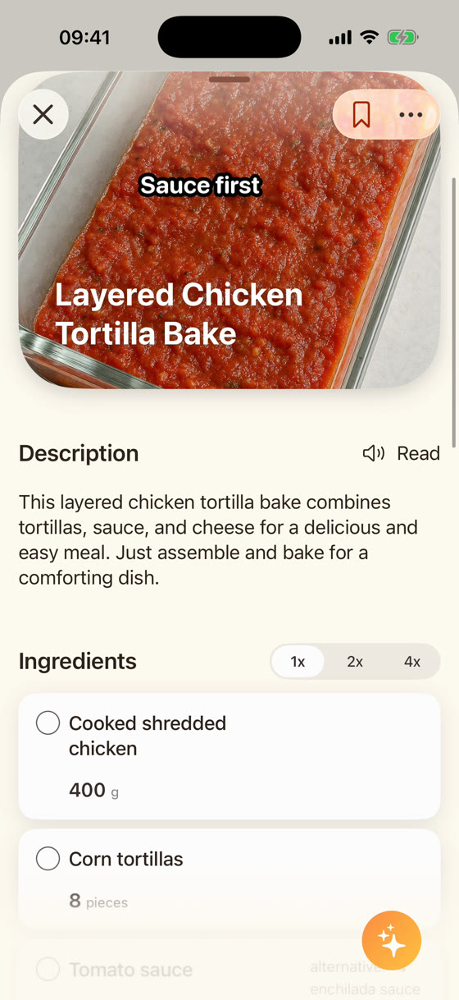

ReciPics
ReciPics
Short answer: ReciPics may suit you if you cook from an iPhone with iOS 26 or later and want recipes from photos of ingredients, allergy and diet profiles, and a grocery list sorted by store section.
Paprika may suit you if you use several devices, including Android or Windows, want offline use, sync and family sharing, or prefer a lower listed yearly price.
Paprika Recipe Manager is now version 4 and free to download with an optional subscription. ReciPics (App Store name: “ReciPics: Save My Recipes”) is the app compared here. ReciPics is for iPhone with iOS 26 or later; the App Store does not list it for iPad, Mac or other platforms. The table puts the public facts side by side: devices, prices, recipe import, planning and cook mode, so you can choose what suits you.
View on the App Store


Real screens from the app.
| Feature | ReciPics | Paprika |
|---|---|---|
| Devices | iPhone with iOS 26 or later. iPad, Mac, Apple Watch and Apple Vision are not listed. No Android or Windows app. | iPhone (iOS 18.6 or later), iPad (iPadOS 18.6 or later), Apple Watch (watchOS 10.5 or later), Apple Vision (visionOS 2.6 or later), Mac (separate listing, macOS 15.6 or later), Android, Windows |
| Web | No web app. A browser tool for scaling and unit conversion is on recipics.app | No web app stated publicly; a bookmarklet is listed |
| Price to download | Free | Free |
| Subscription | ReciPics Premium, weekly or yearly | Paprika subscription; one subscription covers all platforms |
| Listed US prices | Yearly $29.99, weekly $4.99 (in-app purchases on the US App Store) | $14.99 per year (introductory, US App Store, USD); $9.99 per year for existing users |
| Free trial | 3 days on the yearly plan, for eligible new subscribers. The weekly plan has no trial. | 1 week for new subscribers |
| Without a subscription | Limited free allowance of AI recipes. For new users without a paid plan, link imports per month are limited. Exact numbers: not stated publicly. | Up to 50 recipes on a single device, no cloud sync, 1 grocery list, 1 cookbook and 1 pantry location; no time limit. Previous buyers get the Standard tier. |
| Family sharing | Not stated publicly | Family members share the owner’s subscription |
| Import from websites | Yes: paste a link or share from the browser. Some sites block the import. | Yes; listed without a Premium marker |
| Import from Instagram and TikTok | Yes: reads the caption; if there is no recipe, tries the video (videos up to 2 minutes). Results vary. | Yes, from the TikTok, Instagram, Facebook and YouTube apps (Premium) |
| Import from YouTube | No dedicated import; such links go through the general link import, and results vary | Yes (Premium) |
| Import from Pinterest | No dedicated import; such links go through the general link import, and results vary | Not stated publicly |
| Recipe text and files | Paste a recipe as text when an import fails | Extract recipe text from the clipboard (Premium); import recipe files from other apps |
| Photo of a recipe card or cookbook page | Yes, by camera or photo library. Uses the AI allowance, limited without Premium. | Yes: scan a cookbook page or recipe card (Premium) |
| Photo of ingredients or a finished dish | Ingredients photo gives recipe suggestions; a photo of a cooked dish identifies the recipe; voice input | Not stated publicly |
| Meal planner | Yes (meal plan in the app; source: recipics.app) | Day, week or month; reusable menus; add the week to the grocery list; calendar sync (Premium) |
| Grocery list | Sorted into store sections; share in one tap without an account, as text or PDF | Browse by aisle; multiple lists (Premium); pantry tracking; barcode scanning (Premium) |
| Scaling servings | 1x, 2x, 4x in the app | Scale servings |
| Unit conversion | In the app: not stated publicly. Browser converter on recipics.app | Convert measurements |
| Cook mode | Step-by-step, optional voice guidance (steps read aloud), tick off ingredients | Hands-free voice commands, steps read aloud, cross off ingredients, highlight the current step, tap-to-start timers, screen stays on |
| Nutrition | Estimated calories on recipes; nutrition editable by hand | Nutrition labels from ingredients, with USDA data (Premium) |
| Ingredient substitutions | Swap ingredients; in-recipe AI assistant by text or voice | Via Apple Intelligence |
| Sync across devices | No. Recipes are stored on the iPhone; no iCloud sync | Sync with all devices (Premium); cloud backup |
| Sharing | Recipes and grocery lists as text or PDF | Print recipes, lists, menus and meal plans; share cookbooks (Premium) |
| Offline use | Saved recipes are stored on the iPhone. Import and AI features need an internet connection | “Works offline” |
| Other integrations | No widgets, Shortcuts, Siri or Spotlight integration. Share links into the app from your browser or social apps | Widgets, Shortcuts, Siri, Spotlight, Alexa (Premium), iPhone Duo support |
| App Store languages | English, German | 16 languages: English, Czech, Danish, Dutch, Finnish, French, German, Hungarian, Italian, Japanese, Norwegian Bokmål, Polish, Portuguese, Simplified Chinese, Spanish, Swedish |
Checked 16 November 2026 from the public App Store listings and websites; prices and features may have changed since; check the App Store and the vendor’s site before you decide.
Notice an error? Contact us and we will correct it.
“Not stated publicly” means we found no statement in these sources; the feature may still exist. In the ReciPics column, “No” describes the current app on the check date. Prices are from the US App Store and the apps’ own websites.
Sources: ReciPics on the App Store · websites guide · Instagram and TikTok guide · handwritten recipes guide · cookbook guide · grocery list guide · recipe scaler · recipics.app home page (meal planner) · Paprika on the App Store · Paprika on the Mac App Store · paprikaapp.com · Paprika pricing help · Paprika news
ReciPics is free to download and includes a limited free allowance of AI recipes. ReciPics Premium is weekly or yearly; prices for your region are shown in the app and in the App Store.
Also compared: ReciMe alternative: ReciPics compared
Ways to save recipes: Save recipes from websites · Save recipes from Instagram and TikTok · Digital cookbook app
Get ReciPics on the App StoreFor iPhone with iOS 26 or later.
ReciMe and Paprika are trademarks of their respective owners. ReciPics is not affiliated with, sponsored or endorsed by them. Information about other apps comes from public sources and is not guaranteed to be complete or current.